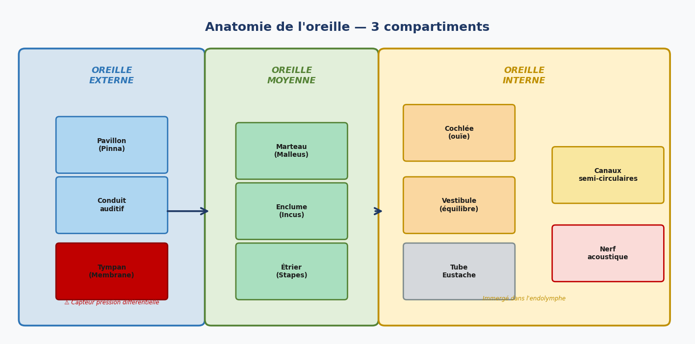
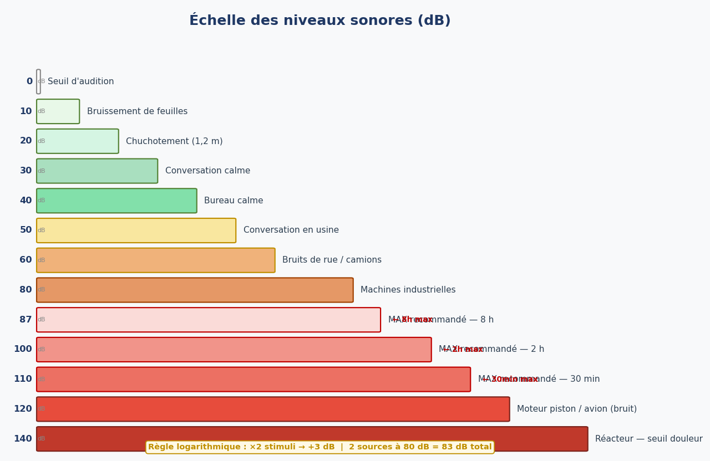
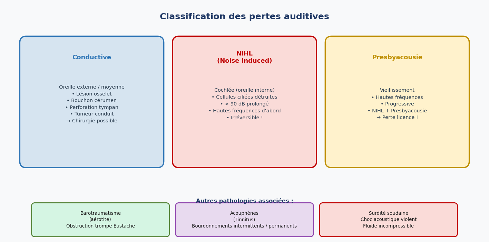
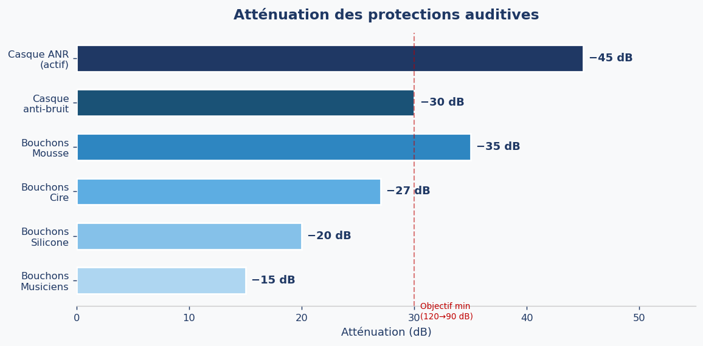
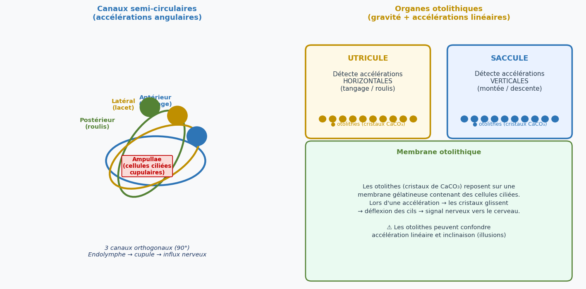

1. Introduction
L'oreille est un organe sensoriel double : elle assure à la fois la perception auditive et la détection de l'équilibre. Dans le contexte aéronautique, ces deux fonctions sont critiques pour la sécurité des vols — la première pour les communications radio, la seconde pour la perception des mouvements et des accélérations de l'appareil.
Anatomiquement, l'oreille se divise en trois compartiments fonctionnels : l'oreille externe, l'oreille moyenne et l'oreille interne. Chaque compartiment joue un rôle précis dans la chaîne de traitement du signal sonore, depuis la capture des ondes acoustiques jusqu'à leur transformation en influx nerveux.

2. Anatomie de l'oreille
2.1 Oreille externe
L'oreille externe comprend le pavillon (pinna) et le conduit auditif externe. Le pavillon joue un rôle de collecteur d'ondes sonores et permet une première localisation directionnelle du son. Le conduit auditif externe achemine les vibrations acoustiques jusqu'au tympan.
La frontière entre l'oreille externe et l'oreille moyenne est marquée par le tympan (membrane tympanique). C'est une membrane fine et très sensible qui fonctionne comme un capteur de pression différentielle dynamique : elle perçoit les variations de pression sonore et se met à vibrer en conséquence. Toute altération de cette membrane (perforation, cicatrices) réduit sa capacité vibratoire et entraîne une perte auditive.
2.2 Oreille moyenne
L'oreille moyenne est une cavité osseuse d'un volume de 1 à 2 cm³ creusée dans le rocher de l'os temporal. Elle contient la chaîne des osselets, qui transmet mécaniquement les vibrations du tympan vers l'oreille interne. Cette chaîne est composée de trois petits os articulés :
- Le marteau (malleus) — en contact direct avec le tympan
- L'enclume (incus) — os intermédiaire
- L'étrier (stapes) — appuie sur la fenêtre ovale de l'oreille interne
La chaîne ossiculaire assure non seulement la transmission mécanique des vibrations mais joue aussi un rôle d'adaptation d'impédance entre l'air de l'oreille externe et les liquides de l'oreille interne. Elle amplifie les sons d'un facteur d'environ 22, compensant la perte d'énergie due à la différence de milieux.
L'oreille moyenne est mise en communication avec le rhinopharynx par la trompe d'Eustache, qui permet l'égalisation des pressions de part et d'autre du tympan. Cette trompe est normalement fermée et ne s'ouvre que lors des mouvements de déglutition, bâillement ou mastication. Son obstruction (par un rhume, par exemple) est à l'origine des barotraumatismes en aviation.
2.3 Oreille interne
L'oreille interne est l'organe le plus complexe du système auditif. Elle est constituée d'un réseau de cavités et de canaux creusés dans l'os pétreux, appelé le labyrinthe. Ses structures sont immergées dans un liquide visqueux nommé endolymphe et sont entourées d'un liquide périlymphe.
Le labyrinthe comprend deux capteurs majeurs :
- La cochlée (limaçon) — organe de l'audition
- Le vestibule — organe de l'équilibre (canaux semi-circulaires + organes otolithiques)
3. Perception auditive
3.1 Physiologie de l'audition
Le son est une vibration mécanique qui se propage dans un milieu élastique (air, liquide, solide). Dans le vide, aucun son ne peut se transmettre. La chaîne de transduction auditive suit la séquence suivante :
Ondes sonores → Vibration du tympan → Chaîne des osselets → Fenêtre ovale → Mouvements de l'endolymphe dans la cochlée → Deflexion des cellules ciliées de l'organe de Corti → Influx électriques → Nerf auditif → Cerveau
3.2 Fréquences et plages d'audition
L'oreille humaine est sensible à une plage de fréquences allant de 20 Hz à 20 000 Hz (20 kHz). Cette limite supérieure diminue naturellement avec l'âge — c'est la presbyacousie. Les fréquences les plus importantes pour la communication humaine, notamment la voix, se situent entre 500 et 3 000 Hz.
3.3 Intensité sonore — l'échelle décibel
L'intensité sonore est mesurée en décibels (dB) selon une échelle logarithmique. Cette échelle est logarithmique car la perception humaine suit la loi de Weber-Fechner : nous percevons les différences relatives d'intensité, pas les différences absolues.
Exemple : 2 sources émettant chacune 80 dB émettent ensemble 83 dB (pas 160 dB !)
Exemple : 4 sources à 80 dB → 80 + 3 + 3 = 86 dB

4. Bruit aéronautique
4.1 Sources de bruit en aéronautique
En aéronautique, le pilote est exposé à plusieurs sources de bruit simultanées. On distingue principalement :
- Le bruit aérodynamique — dû au frottement de l'air sur la cellule et les surfaces portantes
- Le bruit mécanique — vibrations du moteur, des systèmes hydrauliques, du train d'atterrissage
- Le bruit de climatisation — systèmes de conditionnement d'air sous pression
- Le bruit radio — parasites et casque : +7 à +12 dB ajoutés au niveau ambiant
5. Pertes auditives
Les pertes auditives se classifient en trois grandes catégories selon leur mécanisme :

5.1 Surdité de transmission (conductive)
La surdité de transmission résulte d'une altération du système mécanique de conduction du son, c'est-à-dire de l'oreille externe ou de l'oreille moyenne. Les causes possibles incluent :
- Cicatrisation du tympan (réduction de l'amplitude de vibration)
- Traumatisme de la chaîne ossiculaire (choc sur l'oreille)
- Bouchon de cérumen ou tumeur du conduit auditif externe
- Otite moyenne (infection, épanchement)
- Otosclérose (raidissement de l'étrier)
Cette forme de surdité est souvent partiellement réversible par traitement médical ou chirurgical (microchirurgie ossiculaire).
5.2 Surdité due au bruit — NIHL
La Noise Induced Hearing Loss (NIHL) est causée par une exposition prolongée ou répétée à des niveaux sonores excessifs. Le mécanisme est la destruction mécanique des cellules ciliées de la cochlée (organe de Corti), qui sont des cellules non régénérables chez l'adulte. Cette destruction est donc irréversible.
La perte auditive induite par le bruit affecte en priorité les hautes fréquences (notamment 4 000 Hz), car les cellules ciliées correspondant aux sons aigus sont situées à la base de la cochlée, zone directement exposée aux vibrations les plus intenses.
5.3 Presbyacousie
La presbyacousie est la perte auditive liée au vieillissement normal de l'oreille interne. Elle est progressive, bilatérale et symétrique. Elle touche en premier lieu les hautes fréquences, entraînant une difficulté à percevoir les consonnes aiguës de la parole (s, f, t, ch).
En aviation, la combinaison presbyacousie + NIHL peut atteindre un niveau d'atteinte suffisant pour entraîner la perte de la licence de pilote. L'audiogramme réalisé lors des visites médicales NAVIGANT vérifie précisément la conservation des seuils auditifs sur les fréquences importantes pour la communication.
5.4 Autres pathologies auditives
Barotraumatisme (aérotite) : Lésion du tympan ou de l'oreille moyenne due à un déséquilibre de pression entre l'oreille moyenne et le milieu ambiant, consécutif à l'obstruction de la trompe d'Eustache (rhume, congestion). Se produit lors des phases de descente rapide.
Acouphènes (tinnitus) : Perception de sons sans stimulation sonore extérieure (bourdonnements, sifflements). Peuvent être intermittents ou permanents. Souvent associés à une NIHL ou une presbyacousie. Leur présence peut être disqualifiante pour le maintien d'une licence.
Surdité soudaine : Perte brutale de l'audition consécutive à un traumatisme acoustique violent ou une variation de pression soudaine. Mécanisme : le fluide incompressible de l'oreille interne transmet l'onde de choc directement aux cellules ciliées sans amortissement.
6. Prévention des pertes auditives
6.1 Effets du bruit sur la santé
L'exposition au bruit génère, au-delà des pertes auditives, un ensemble de troubles physiques et cognitifs impactant directement les performances du pilote :
- Fatigue générale et nervosité accrue
- Migraines et céphalées
- Troubles de l'attention et de la concentration
- Difficultés de mémorisation
- Troubles du sommeil (récupération altérée)
- Lésions auditives temporaires ou permanentes
6.2 Valeurs limites d'exposition
| Niveau sonore | Durée maximale d'exposition | Statut |
|---|---|---|
| ≤ 87 dB | 8 heures | ✅ Acceptable journée complète |
| > 90 dB | 8 heures max | ⚠️ Limite recommandée |
| > 100 dB | 2 heures max | ❌ Exposition limitée |
| > 110 dB | 30 minutes max | ❌ Exposition très limitée |
| > 120 dB | Aucune exposition | ⛔ Danger immédiat |
6.3 Moyens de protection
La protection contre le bruit peut être collective ou individuelle.
La protection collective intervient dès la conception des appareils (insonorisation de la cabine, isolation phonique des moteurs, traitement acoustique des postes de travail).
La protection individuelle comprend la sélection et la surveillance médicale, ainsi que le port d'équipements de protection individuelle (EPI) :

6.4 Audition et hypoxie
Un point crucial en aviation d'altitude : l'ouïe est l'un des sens les plus résistants à l'hypoxie. Lors d'une dépressurisation ou d'un manque d'oxygène, la vision se dégrade et disparaît avant que l'audition ne soit affectée. L'ouïe constitue donc le dernier moyen de communication disponible avec un pilote en état d'hypoxie avancée.
7. Système vestibulaire et équilibre
7.1 Canaux semi-circulaires
L'oreille interne contient 3 canaux semi-circulaires remplis d'endolymphe et orientés selon des plans orthogonaux (à 90° les uns des autres). Chaque canal correspond à un axe de rotation de la tête : antérieur (tangage), postérieur (roulis) et latéral (lacet).
Le mécanisme de détection est le suivant : lors d'une rotation angulaire de la tête, l'endolymphe — par son inertie — reste en place alors que les canaux bougent avec la tête. Ce mouvement relatif défléchit la cupule (membrane gélatineuse) située dans chaque ampoule (ampulla). Les cils des cellules sensorielles (ciliées) de la cupule se courbent, générant des influx électriques transmis au cerveau.
7.2 Organes otolithiques — utricule et saccule
Les organes otolithiques sont des structures situées à la base des canaux semi-circulaires, dans le vestibule. Ils contiennent des otolithes : de petits cristaux de carbonate de calcium (CaCO₃) insérés dans une membrane gélatineuse (otolithique) tapissée de cellules ciliées. Leur densité est supérieure à celle de l'endolymphe, ce qui les rend sensibles à la gravité et aux accélérations linéaires.
On distingue deux organes otolithiques selon leur orientation et leur spécialité :
- L'utricule — plan horizontal : détecte les accélérations linéaires horizontales (tangage/roulis) et la direction du vecteur gravité dans le plan horizontal
- Le saccule — plan vertical : détecte les accélérations linéaires verticales (montée/descente)

8. Perception multisensorielle de l'espace
8.1 Récepteurs proprioceptifs — le « siège-culotte »
La perception de l'équilibre et de la position dans l'espace ne repose pas uniquement sur le vestibule. Elle intègre également les informations des récepteurs proprioceptifs somatiques (appelés parfois seat-of-the-pants sense) répartis dans tout le corps :
- Fuseaux neuromusculaires dans les muscles
- Organes de Golgi dans les tendons
- Récepteurs articulaires dans les articulations
- Mécanorécepteurs dans la peau (pression, déformation)
Ces récepteurs informent le cerveau sur la posture du corps, les forces qu'il subit et la relation des membres entre eux. En aviation, la pression ressentie sur le siège du pilote donne des informations sur les accélérations verticales (facteur de charge). Cependant, comme les otolithes, ces récepteurs peuvent être trompés par les forces inertielles et induire des illusions spatiales.
- 🌀 Vestibulaire angulaire — canaux semi-circulaires (rotations)
- ↕️ Vestibulaire linéaire — otolithes (gravité + accélérations linéaires)
- 💪 Proprioceptif — muscles, tendons, peau (forces et posture)
- 👁️ Visuel — horizon naturel ou instruments